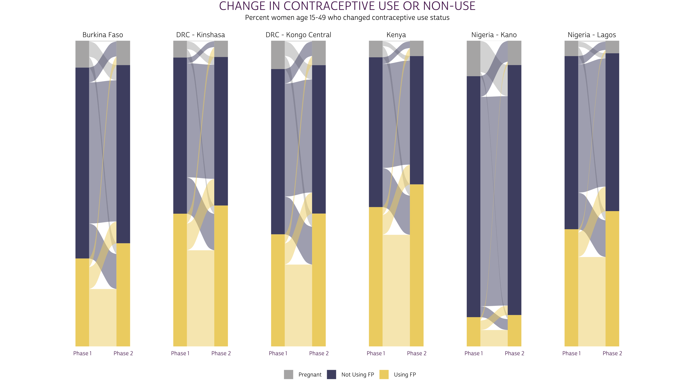
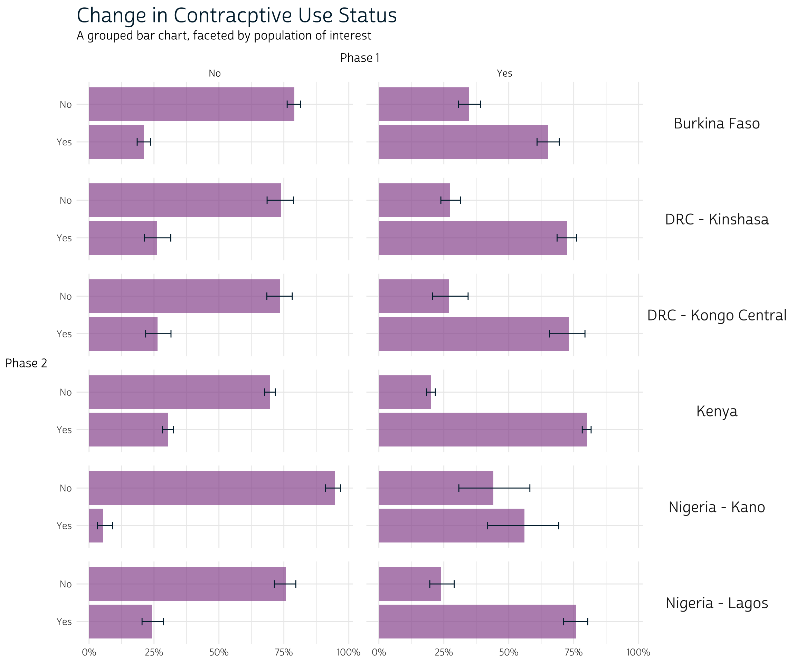
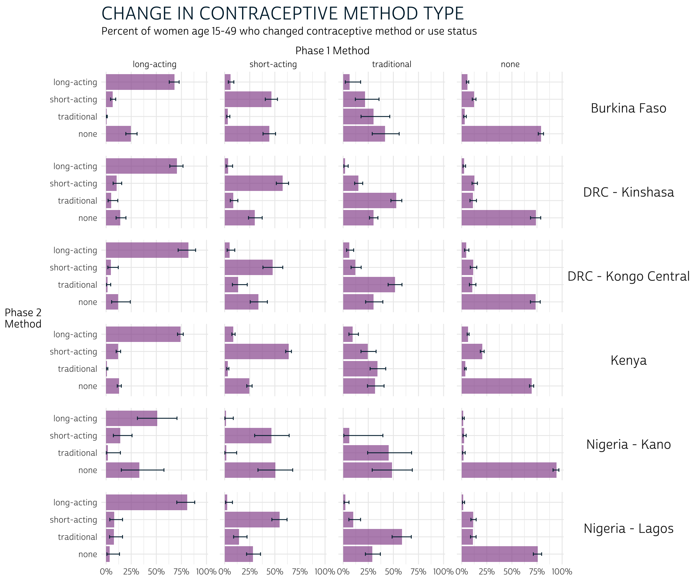
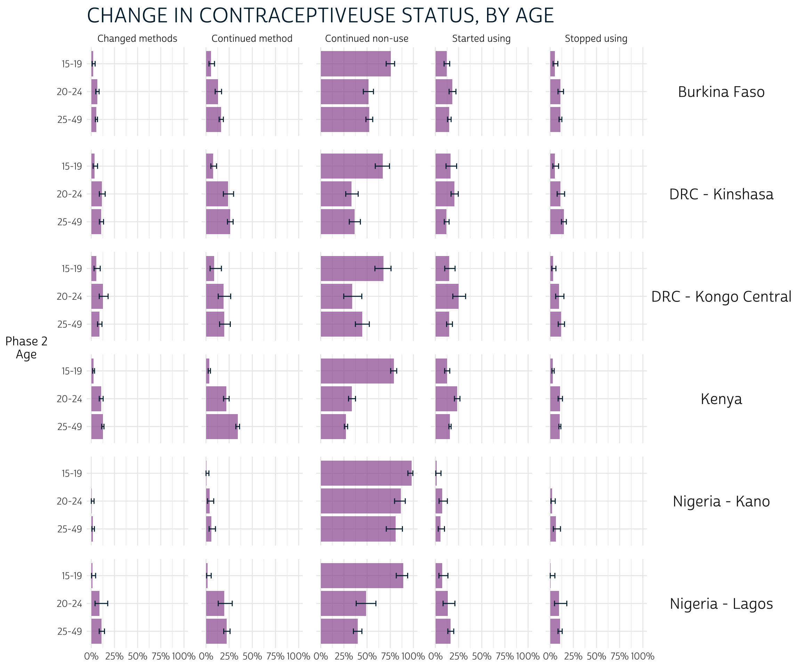
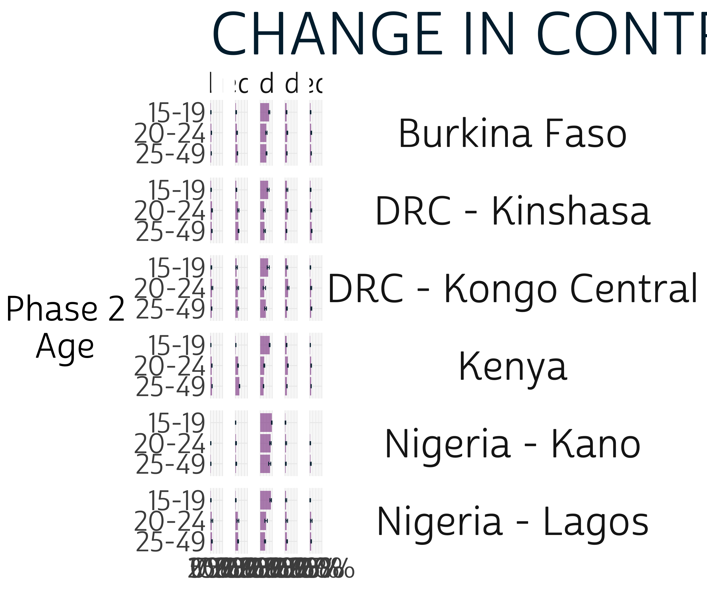
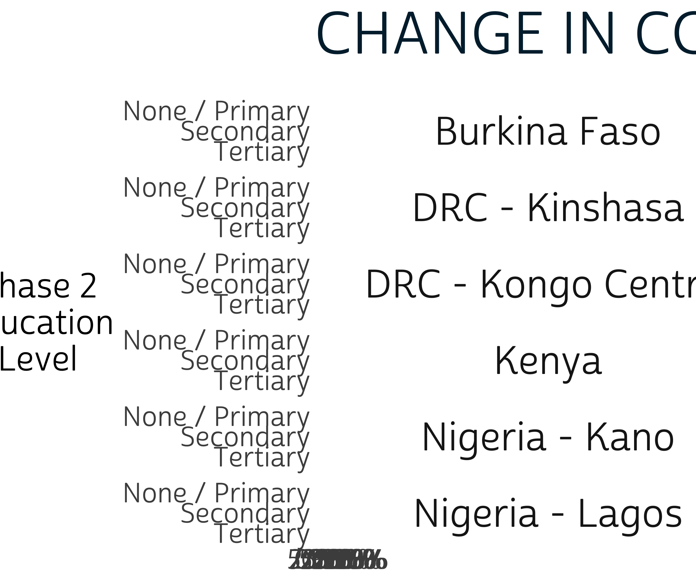
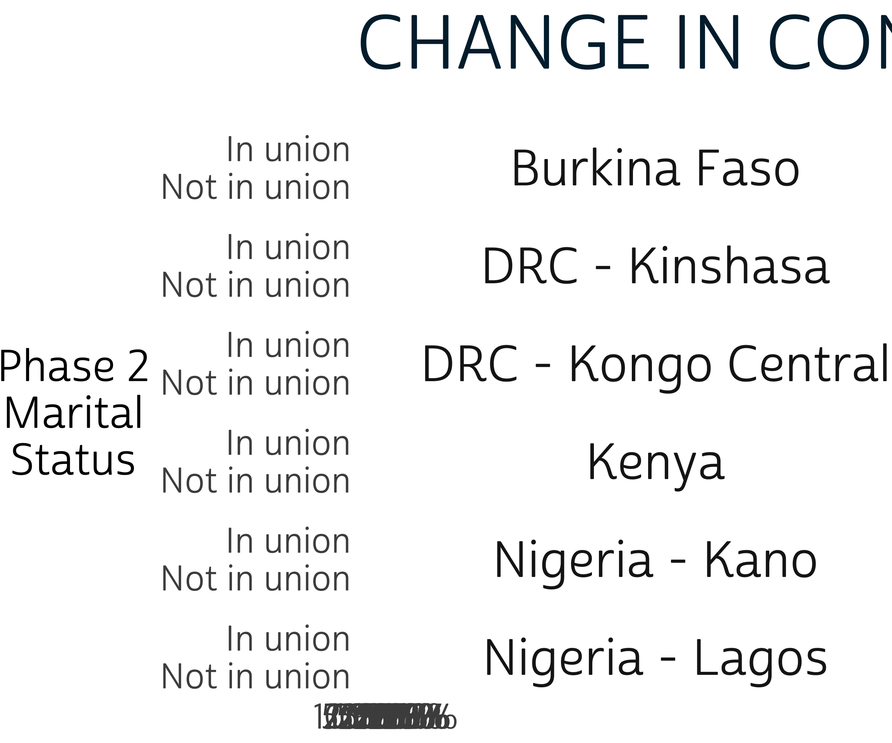
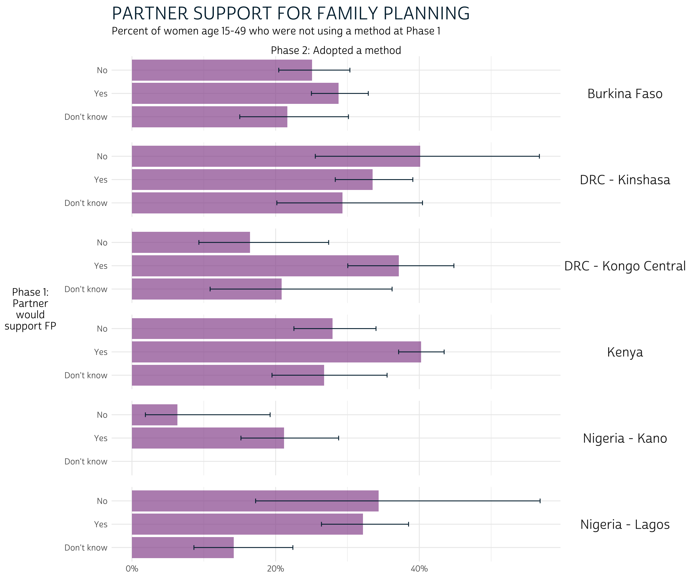
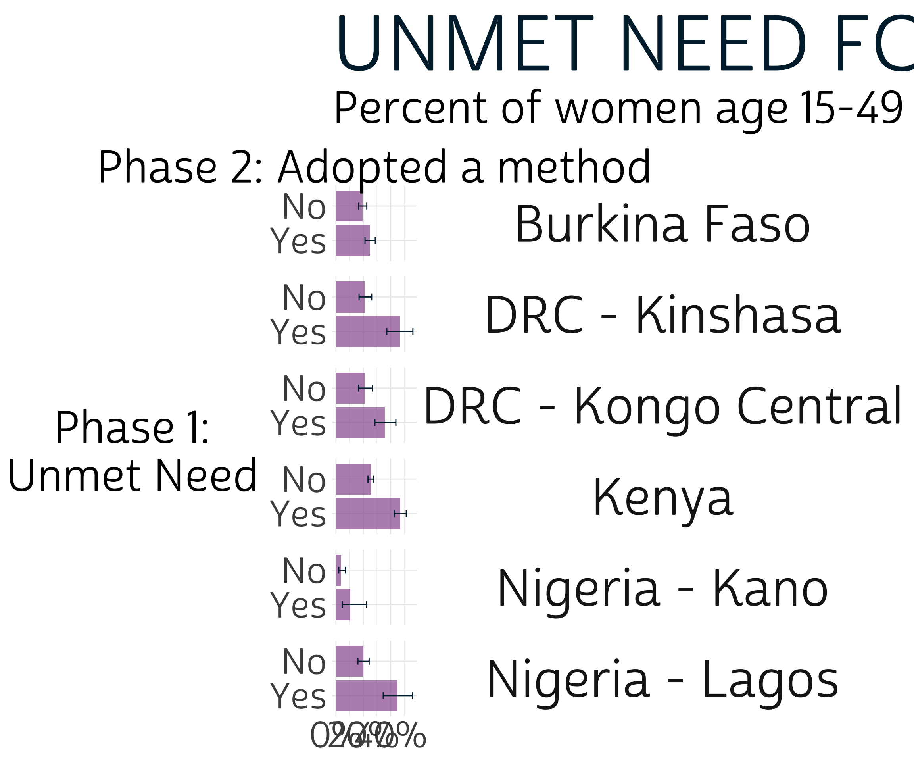

1 Family Planning Indicators
In Chapter 4, we’ll demonstrate how to calculate key family planning indicators appearing in the PMA Longitudinal Brief for each of the longitudinal samples currently available from IPUMS PMA. The brief for each sample is linked below.
Indicators calculated in this chapter cover topics like:
- pregnancy intentions and outcomes
- current use of long-acting, short-acting, and traditional contraceptives
- discontinuation of family planning
- intentions for future use of family planning
- unmet need for family planning
- partner’s support for use of family planning
As we demonstrate how to calculate these indicators, we’ll also provide code you can use to produce appropriate data visualizations built with the ggplot2 package included in the tidyverse toolkit for R.
If you installed tidyverse in Chapter 1, no additional installation is necessary to use ggplot2. If not, we recommend installing the complete tidyverse like so now:
install.packages("tidyverse")1.1 Chapter Setup
Chapter 4 features a wide longitudinal extract with all 6 of the available samples. Unlike Chapter 3, the data extract used in this chapter includes only Female Respondents.

Using the variable selection process described in Chapter 2, add the following variables to you Data Cart and click the View Cart button to begin checkout (preselected variables are added automatically).
- RESULTFQ - Result of female questionnaire
- PANELWEIGHT - Phase 2 female panel weight
- RESIDENT - Household residence / membership
- AGE - Age in female questionnaire
- PREGNANT - Pregnancy status
- BIRTHEVENT - Number of birth events
- EDUCATTGEN - Highest level of school attended (4 categories)
- MARSTAT - Marital status
- GEOCD - Province, DRC
- GEONG - State, Nigeria
- CP - Contraceptive user
- FPCURREFFMETHRC - Most effective current FP method
- UNMETYN - Total unmet need
- FPPARTSUPPORT - Husband / partner would be supportive of FP use
- FPPLANVAL - When will start using FP method in the future - value
- FPPLANWHEN - When will start using FP method in the future - unit
- COUNTRY - PMA country (preselected)
- EAID - Enumeration area (preselected)
Before completing checkout, make sure that you’ve selected the dat data format (fixed-width text).

In R, load the following packages described in Chapter 1.
library(tidyverse)
library(ipumsr)
library(srvyr)Place the IPUMS PMA xml metadata file and dat.gz data file in a subfolder called data in the R working directory. Then, load your extract into R as an object called dat like so:
dat <- read_ipums_micro(
ddi = "data/pma_00106.xml",
data = "data/pma_00106.dat.gz"
)1.1.1 Populations of Interest
We’ve mentioned in Chapter 1 that PMA samples are only valid for the de facto population: these are women who slept in the household during the night before the interview for the Household Questionnaire in both phases. These women are coded either 11 or 22 in both RESIDENT_1 and RESIDENT_2. We’ll drop all other women from our extract:
dat <- dat %>% filter(RESIDENT_1 %in% c(11, 22) & RESIDENT_2 %in% c(11, 22))We also mentioned in Chapter 2 that women who completed the Phase 1 Female Questionnaire may have been lost to follow-up at Phase 2. As a reminder, we’ll need to drop any cases where RESULTFQ_2 is not coded 1 for “fully completed”.
dat <- dat %>% filter(RESULTFQ_2 == 1)Additionally, a small number of women in each sample elected not to respond to key questions regarding current use of contraceptives, reported in the variable CP. These cases are coded 90 and above, as shown on the CP Codes tab. We’ll exclude those cases, as well.
dat <- dat %>% filter(CP_1 < 90, CP_2 < 90) Finally, recall that only the Burkina Faso and Kenya samples are nationally representative. Samples from DRC represent regions identified by GEOCD, while samples from Nigeria represent regions identified by GEONG. In order to distinguish each population of interest, we’ll define a custom variable POP that shows each sample’s COUNTRY label concatenated with each of these regions where appropriate.
POP- Population of interest
dat <- dat %>%
mutate(POP = case_when(
!is.na(GEOCD) ~ paste("DRC -", as_factor(GEOCD)),
!is.na(GEONG) ~ paste("Nigeria -", as_factor(GEONG)),
TRUE ~ as_factor(COUNTRY) %>% as.character()
))The remaining sample size for each population of interest is simply a count of each level in POP.
dat %>% count(POP)# A tibble: 6 × 2
POP n
<chr> <int>
1 Burkina Faso 5207
2 DRC - Kinshasa 1967
3 DRC - Kongo Central 1511
4 Kenya 6934
5 Nigeria - Kano 998
6 Nigeria - Lagos 1088As described in Chapter 1, we’ll use the srvyr package to incorporate survey design information into each of the population estimates calculated below. This includes PANELWEIGHT, which represents the calculated inverse selection probability for all panel members, adjusted for loss to follow-up. We’ll also include identifying numbers for each sample via EAID_1.Because women are considered “lost to follow-up” if they moved outside the study area, EAID_1 and EAID_2 are identical for all panel members: you can use either one to identify sample clusters.
Our data extract includes samples from the DRC - Kinshasa and DRC - Kongo Central, so we’ll use the procedure described in Chapter 1 to create a variable for sample strata called STRATA_RECODE. To review: STRATA_RECODE uses unique numeric codes from STRATA, except that it also includes unique identifiers for each sampled region in GEOCD.
dat <- dat %>%
mutate(
STRATA_RECODE = if_else(
is.na(GEOCD),
as.numeric(STRATA_1),
as.numeric(GEOCD)
)
) 1.2 Population Inference
The srvyr function as_survey_design allows us to pass the information in PANELWEIGHT, EAID_1, and STRATA_RECODE to other package functions like survey_mean. We’ll also demonstrate how to use this information in formal significance tests within each sample via svychisq.
Let’s begin with a simple example. The variable CP indicates whether a woman was currently using any family planning method. The variables CP_1 and CP_2 in our wide extract represent responses collected at Phase 1 and Phase 2, respectively. With help from srvyr, we’ll obtain a population-level estimate of the proportion of women who were using a method at Phase 2, given their status at Phase 1.
Below, we first use group_by to divide the data extract into individual samples defined by POP. We then reference each of these samples as cur_data inside a summary function defined by summarise - this ensures that the population estimates obtained from our combined data extract are identical to those you would obtain if you downloaded one extract for each sample and analyzed them separately.
Within summarise, we use as_survey_design to specify information about the design of each sample, and we then use a second group_by to identify each of our variables of interest, CP_1 and CP_2. Finally, we use a second summarise function to calculate a srvyr summary statistic: in this case, we use survey_mean to estimate proportions in the population.
cp_tbl <- dat %>%
group_by(POP) %>%
summarise(
.groups = "keep",
cur_data() %>%
as_survey_design(
weight = PANELWEIGHT,
id = EAID_1,
strata = STRATA_RECODE
) %>%
group_by(CP_1, CP_2) %>%
summarise(survey_mean(
vartype = "ci",
prop = TRUE,
prop_method = "logit"
))
)Let’s take a look at the results in cp_tbl.
cp_tbl# A tibble: 24 × 6
# Groups: POP [6]
POP CP_1 CP_2 coef `_low` `_upp`
<chr> <int+lbl> <int+lbl> <dbl> <dbl> <dbl>
1 Burkina Faso 0 [No] 0 [No] 0.790 0.763 0.815
2 Burkina Faso 0 [No] 1 [Yes] 0.210 0.185 0.237
3 Burkina Faso 1 [Yes] 0 [No] 0.347 0.306 0.391
4 Burkina Faso 1 [Yes] 1 [Yes] 0.653 0.609 0.694
5 DRC - Kinshasa 0 [No] 0 [No] 0.739 0.685 0.787
6 DRC - Kinshasa 0 [No] 1 [Yes] 0.261 0.213 0.315
7 DRC - Kinshasa 1 [Yes] 0 [No] 0.275 0.239 0.314
8 DRC - Kinshasa 1 [Yes] 1 [Yes] 0.725 0.686 0.761
9 DRC - Kongo Central 0 [No] 0 [No] 0.736 0.685 0.782
10 DRC - Kongo Central 0 [No] 1 [Yes] 0.264 0.218 0.315
11 DRC - Kongo Central 1 [Yes] 0 [No] 0.270 0.207 0.343
12 DRC - Kongo Central 1 [Yes] 1 [Yes] 0.730 0.657 0.793
13 Kenya 0 [No] 0 [No] 0.697 0.676 0.717
14 Kenya 0 [No] 1 [Yes] 0.303 0.283 0.324
15 Kenya 1 [Yes] 0 [No] 0.200 0.183 0.217
16 Kenya 1 [Yes] 1 [Yes] 0.800 0.783 0.817
17 Nigeria - Kano 0 [No] 0 [No] 0.946 0.910 0.968
18 Nigeria - Kano 0 [No] 1 [Yes] 0.0544 0.0321 0.0905
19 Nigeria - Kano 1 [Yes] 0 [No] 0.440 0.308 0.581
20 Nigeria - Kano 1 [Yes] 1 [Yes] 0.560 0.419 0.692
21 Nigeria - Lagos 0 [No] 0 [No] 0.757 0.713 0.796
22 Nigeria - Lagos 0 [No] 1 [Yes] 0.243 0.204 0.287
23 Nigeria - Lagos 1 [Yes] 0 [No] 0.240 0.196 0.290
24 Nigeria - Lagos 1 [Yes] 1 [Yes] 0.760 0.710 0.804 The population estimate for each row appears in the column _coef. Looking at row 1, we would estimate that 79% of women aged 15-49 in Burkina Faso used no method both at Phase 1 and again at Phase 2. The columns _low and _upp report the limits of a 95% confidence interval: 76.3% and 81.5%.
Comparing these confidence intervals gives us an informal, conservative way to test for a significant difference between outcomes for each POP: if the intervals for any pair of outcomes in the same sample include no common values, we’ll say that a significant difference exists. Formal testing may also reveal significant differences between pairs of outcomes where these intervals overlap only slightly. Our approach is well suited for data visualization, but it should not replace formal testing. Fortunately, you can adapt our code to replace (or complement) the output from survey_mean.
1.3 Significance Test
For example, here we demonstrate how to calculate a Rao-Scott chi-square test for significant differences between the estimated population proportions for each POP and the proportions we would expect to observe if Phase 2 outcomes were statistically independent from Phase 1 conditions.The Rao-Scott second-order correction to Pearson’s chi-square test is used to incorporate survey design information from as_survey_design, reflecting weighted population estimates. Wald-type chi-square tests are also available: see svychisq for details. Because we’re interested in just one summary statistic per sample, we no longer need to group_by CP_1 and CP_2; instead, we’ll use the formula ~CP_1 + CP_2 in the function svychisq.
rao_tbl <- dat %>%
group_by(POP) %>%
summarise(
.groups = "keep",
cur_data() %>%
as_survey_design(
weight = PANELWEIGHT,
id = EAID_1,
strata = STRATA_RECODE
) %>%
summarise(rao = svychisq(~CP_1 + CP_2, design = .) %>% list)
)
rao_tbl# A tibble: 6 × 2
# Groups: POP [6]
POP rao
<chr> <list>
1 Burkina Faso <htest>
2 DRC - Kinshasa <htest>
3 DRC - Kongo Central <htest>
4 Kenya <htest>
5 Nigeria - Kano <htest>
6 Nigeria - Lagos <htest>Our new summary column rao contains output for each sample’s test in a list. From here, you can extract output elements rowwise by name like so:
rao_tbl %>%
rowwise() %>%
mutate(
`F` = rao$statistic,
p.value = rao$p.value,
sig95 = p.value < 0.05
)# A tibble: 6 × 5
# Rowwise: POP
POP rao F p.value sig95
<chr> <list> <dbl> <dbl> <lgl>
1 Burkina Faso <htest> 468. 4.62e- 50 TRUE
2 DRC - Kinshasa <htest> 216. 4.80e- 21 TRUE
3 DRC - Kongo Central <htest> 123. 9.43e- 16 TRUE
4 Kenya <htest> 1140. 8.58e-102 TRUE
5 Nigeria - Kano <htest> 89.2 2.23e- 9 TRUE
6 Nigeria - Lagos <htest> 204. 2.85e- 19 TRUE 1.4 Data Visualization
We’ll use simple grouped bar charts to show population estimates for each proportion calculated throughout the remainder of this chapter. A grouped bar chart differs from the stacked bar charts shown in PMA reports in that each response is plotted along an axis (rather than stacked together in a single bar). We’ll show grouped bar charts here so that we can also include error bars representing a 95% confidence interval for each proportion.
For example, let’s plot the estimates created in cp_tbl above. As a preliminary step, we’ll recode CP_1 and CP_2 with as_factor and sort their levels with fct_relevel. This ensures that the value labels for each variable will be printed on our plot.
cp_tbl <- cp_tbl %>%
mutate(
across(
c(CP_1, CP_2),
~as_factor(.x) %>% fct_relevel("No", "Yes")
)
)Next, we’ll use ggplot2 to build the plot. Because our data includes multiple samples, we’ll use facet_grid to plot all summary data in multiple panels. The functions geom_bar and geom_errorbar plot the grouped bars and error bars, respectively. A baseline plot should look something like this:
cp_tbl %>%
ggplot(aes(x = coef, y = CP_2)) +
facet_grid(rows = vars(POP), cols = vars(CP_1)) +
geom_bar(stat = "identity") +
geom_errorbar(aes(xmin = `_low`, xmax = `_upp`), width = 0.2)
1.4.1 Plot theme
One of the powerful features of ggplot2 is that you can use pre-built themes to customize this baseline layout. We’ll build on theme_minimal to create our own theme_pma (with custom fonts incorporated by the sysfonts and showtext packages). Feel free to use our theme, or tweak it to create your own!
library(showtext)
sysfonts::font_add(
family = "cabrito",
regular = here("fonts/cabritosansnormregular-webfont.ttf")
)
showtext::showtext_auto()
theme_pma <- theme_minimal() %+replace%
theme(
text = element_text(family = "cabrito", size = 13),
plot.title = element_text(size = 22, color = "#00263A",
hjust = 0, margin = margin(b = 5)),
plot.subtitle = element_text(hjust = 0, margin = margin(b = 10)),
strip.background = element_blank(),
strip.text.y = element_text(size = 16, angle = 0),
panel.spacing = unit(1, "lines"),
axis.title.y = element_text(angle = 0, margin = margin(r = 10))
)1.4.2 Plot function
Because we’ll be constructing the same type of plot for each indicator, we’ll need to re-use the same ggplot2 functions several times. In this circumstance, it’s often helpful to combine repeated functions inside a custom function of your own: this prevents errors and saves time.
We’ll call our custom function pma_bars. It includes:
theme_pmacreated above- labs for plot labels (passed from function arguments)
- scale_x_continuous formatting for continuous x-axis labels
- scale_y_discrete formatting for discrete y-axis labels
- geom_bar for grouped bars
- geom_bar for error bars
pma_bars <- function(
title = NULL, # an optional title
subtitle = NULL, # an optional subtitle
xaxis = NULL, # an optional label for the x-axis (displayed above)
yaxis = NULL # an optional label for the y-axis (displayed left)
){
components <- list(
if(exists("theme_pma")){theme_pma},
labs(
title = title,
subtitle = subtitle,
y = str_wrap(yaxis, 10),
x = NULL,
fill = NULL
),
scale_x_continuous(
position = 'bottom',
sec.axis = sec_axis(trans = ~., name = xaxis, breaks = NULL),
labels = scales::label_percent()
),
scale_y_discrete(limits = rev),
geom_bar(stat = "identity", fill = "#98579BB0"),
geom_errorbar(
aes(xmin = `_low`, xmax = `_upp`),
width = 0.2,
color = "#00263A"
)
)
}Going forward, we’ll incorporate pma_bars together with a ggplot and facet function for a given set of variables like so:
cp_tbl %>%
ggplot(aes(x = coef, y = CP_2)) +
facet_grid(rows = vars(POP), cols = vars(CP_1)) +
pma_bars(
title = "Change in Contracptive Use Status",
subtitle = "A grouped bar chart, faceted by population of interest",
xaxis = "Phase 1",
yaxis = "Phase 2"
)
1.5 Contraceptive Use or Non-Use
Let’s continue our examination of CP. In the PMA reports for each sample linked above, you’ll notice that women who were pregnant at either phase are distinguished from women who reported use or non-use in CP_1 or CP_2. We’ll identify these women in the variable PREGNANT, and then we’ll create a combined indicator called FPSTATUS.
FPSTATUS- Pregnant, using contraception, or using no contraception
dat <- dat %>%
mutate(
FPSTATUS_1 = case_when(
PREGNANT_1 == 1 ~ "Pregnant",
CP_1 == 1 ~ "Using FP",
CP_1 == 0 ~ "Not Using FP"
),
FPSTATUS_2 = case_when(
PREGNANT_2 == 1 ~ "Pregnant",
CP_2 == 1 ~ "Using FP",
CP_2 == 0 ~ "Not Using FP"
),
across(
c(FPSTATUS_1, FPSTATUS_2),
~.x %>% fct_relevel("Pregnant", "Not Using FP", "Using FP")
)
)We’ll now revise cp_tbl to include information from FPSTATUS_1 and FPSTATUS_2. This will help us answer key questions like:
- Are women who were pregnant at Phase 1 more likely to use or not use family planning at Phase 2?
- Are women who were using (or not using) contraception at Phase 1 likely to maintain the same status at Phase 2?
cp_tbl <- dat %>%
group_by(POP) %>%
summarise(
.groups = "keep",
cur_data() %>%
as_survey_design(weight = PANELWEIGHT, id = EAID_1, strata = STRATA_RECODE) %>%
group_by(FPSTATUS_1, FPSTATUS_2) %>%
summarise(survey_mean(vartype = "ci", prop = TRUE, prop_method = "logit"))
)This new version of cp_tbl includes the labels we assigned to FPSTATUS_1 and FPSTATUS_2. The first dozen rows are shown below.
cp_tbl# A tibble: 54 × 6
# Groups: POP [6]
POP FPSTATUS_1 FPSTATUS_2 coef `_low` `_upp`
<chr> <fct> <fct> <dbl> <dbl> <dbl>
1 Burkina Faso Pregnant Pregnant 0.0302 0.0137 0.0652
2 Burkina Faso Pregnant Not Using FP 0.568 0.491 0.642
3 Burkina Faso Pregnant Using FP 0.401 0.329 0.478
4 Burkina Faso Not Using FP Pregnant 0.0779 0.0651 0.0929
5 Burkina Faso Not Using FP Not Using FP 0.739 0.711 0.765
6 Burkina Faso Not Using FP Using FP 0.183 0.158 0.211
7 Burkina Faso Using FP Pregnant 0.0993 0.0815 0.121
8 Burkina Faso Using FP Not Using FP 0.248 0.213 0.287
9 Burkina Faso Using FP Using FP 0.653 0.609 0.694
10 DRC - Kinshasa Pregnant Pregnant 0.0367 0.0140 0.0930
11 DRC - Kinshasa Pregnant Not Using FP 0.464 0.338 0.594
12 DRC - Kinshasa Pregnant Using FP 0.500 0.370 0.629
# … with 42 more rowsNext, we’ll plot cp_tbl with pma_bars.
cp_tbl %>%
ggplot(aes(x = coef, y = FPSTATUS_2)) +
facet_grid(cols = vars(FPSTATUS_1), rows = vars(POP)) +
pma_bars(
"CHANGE IN CONTRACEPTIVE USE OR NON-USE",
"Percent women age 15-49 who changed contraceptive use status",
xaxis = "Phase 1 Status",
yaxis = "Phase 2 Status"
)
To reiterate: comparing the error bars within each of these 18 panels gives us a informal, but conservative test for significant difference. We’ll say that a significant difference occurs where two pairs of error bars do not overlap (but additional testing may be necessary to determine whether a significant difference occurs where error bars overlap only slightly). A few observations:
- For women who were pregnant at Phase 1, there is usually no apparent difference between using and not using family planning at Phase 2. Kenya and Nigeria - Kano are the exception: in Kenya, pregnant women at Phase 1 were appear more likely to be using FP at Phase 2, while the opposite is true in Kano.
- Overall, non-pregnant women at Phase 1 appeared more likely to maintain the same status (use or non-use) at Phase 2 than they were to switch or become pregnant.
1.6 Contraceptive Method Type
PMA surveys also ask contraceptive users to indicate which method they are currently using at each phase of the study. If a woman reports using more than one method, FPCURREFFMETH shows her most effective currently used method. These responses are combined with detailed information about use of the lactational amenorrhea method (LAM), emergency contraception, or injectable type in FPCURREFFMETHRC. PMA reports use FPCURREFFMETHRC to determine whether each woman’s most effective current method is a short-acting, long-acting, or traditional method.
Long-acting methods include:
- IUDs
- implants
- male sterilization
- female sterilization
Short-acting methods include:
- injectables (intramuscular and subcutaneous)
- the pill
- emergency contraception
- male condoms
- female condoms
- LAM
- diaphragm
- foam/jelly
- standard days method
Traditional methods include:
- rhythm
- withdrawal
- other traditional
These methods are coded sequentially by group in FPCURREFFMETHRC. Women who are “NIU (not in universe)” were using no method.
dat %>% count(FPCURREFFMETHRC_1)# A tibble: 19 × 2
FPCURREFFMETHRC_1 n
<int+lbl> <int>
1 101 [Female Sterilization] 198
2 102 [Male Sterilization] 1
3 111 [Implants] 2248
4 112 [IUD] 226
5 121 [Injectables (3 months)] 1412
6 123 [Injectables (Sayana Press)] 296
7 131 [Pill] 547
8 132 [Emergency Contraception] 243
9 141 [Male condom] 791
10 142 [Female condom] 1
11 151 [Diaphragm] 1
12 152 [Foam] 1
13 160 [Standard Days/Cycle Beads Method] 70
14 170 [Lactational amenorrhea method (LAM)] 24
15 210 [Rhythm] 569
16 220 [Withdrawal] 351
17 240 [Other traditional] 153
18 998 [No response or missing] 1
19 999 [NIU (not in universe)] 10572We’ll use across to recode the Phase 1 and Phase 2 versions of FPCURREFFMETHRC simultaneously. We’ll also attach the prefix CAT to each variable, indicating that we’ve created “categorized” versions of each.
CAT_FPSFPCURREFFMETHRC- Contraceptive method type
dat <- dat %>%
mutate(
across(
c(FPCURREFFMETHRC_1, FPCURREFFMETHRC_2),
~case_when(
.x < 120 ~ "long-acting",
.x < 200 ~ "short-acting",
.x < 900 ~ "traditional",
TRUE ~ "none") %>%
fct_relevel( "long-acting", "short-acting", "traditional", "none"),
.names = "CAT_{.col}"
)
) Next, we’ll generate population estimates for our derived variables, CAT_FPCURREFFMETHRC_1 and CAT_FPCURREFFMETHRC_2.
meth_tbl <- dat %>%
group_by(POP) %>%
summarise(
.groups = "keep",
cur_data() %>%
as_survey_design(weight = PANELWEIGHT, id = EAID_1, strata = STRATA_RECODE) %>%
group_by(CAT_FPCURREFFMETHRC_1, CAT_FPCURREFFMETHRC_2) %>%
summarise(survey_mean(vartype = "ci", prop = TRUE, prop_method = "logit"))
)
meth_tbl# A tibble: 95 × 6
# Groups: POP [6]
POP CAT_FPCURREFFMETHRC_1 CAT_FPCURREFFMETHRC_2 coef `_low` `_upp`
<chr> <fct> <fct> <dbl> <dbl> <dbl>
1 Burkina Faso long-acting long-acting 0.680 0.629 0.727
2 Burkina Faso long-acting short-acting 0.0658 0.0448 0.0955
3 Burkina Faso long-acting traditional 0.00611 0.00325 0.0115
4 Burkina Faso long-acting none 0.248 0.196 0.308
5 Burkina Faso short-acting long-acting 0.0584 0.0367 0.0917
6 Burkina Faso short-acting short-acting 0.465 0.405 0.526
7 Burkina Faso short-acting traditional 0.0328 0.0205 0.0519
8 Burkina Faso short-acting none 0.444 0.382 0.507
9 Burkina Faso traditional long-acting 0.0635 0.0215 0.174
10 Burkina Faso traditional short-acting 0.217 0.121 0.357
11 Burkina Faso traditional traditional 0.302 0.178 0.464
12 Burkina Faso traditional none 0.418 0.289 0.558
# … with 83 more rowsAnd, we’ll again use pma_bars to plot the results.
meth_tbl %>%
ggplot(aes(x = coef, y = CAT_FPCURREFFMETHRC_2)) +
facet_grid(cols = vars(CAT_FPCURREFFMETHRC_1), rows = vars(POP)) +
pma_bars(
"CHANGE IN CONTRACEPTIVE METHOD TYPE",
"Percent of women age 15-49 who changed contraceptive method or use status",
xaxis = "Phase 1 Method",
yaxis = "Phase 2 Method"
)
What do we learn from this plot? Let’s consider each column in turn:
- Users of “long-acting” methods at Phase 1 appear more likely to have used “long-acting” methods at Phase 2 than to have changed status (except perhaps in Kano, where the intervals for “long-acting” and “none” overlap at Phase 2).
- Users of “short-acting” methods at Phase 1 appeared generally likely to use them again at Phase 2, but some samples show that women are equally likely to be using “none” at Phase 2. A difference between these two outcomes is visually apparent only in Kinshasa, Kenya, and Lagos (where women were more likely to be using “short-acting” methods than “none”).
- The status of Phase 1 “traditional” users is generally unclear at Phase 2. In Kinshasa, Kongo Central, and Lagos, these women seem most likely to remain “traditional” users at Phase 2. Elsewhere, there are no clear trends.
- Users of “none” at Phase 1 were clearly most likely to remain as such at Phase 2.
1.7 Contraceptive Dynamics by Subgroup
We can also use FPCURREFFMETHRC to see whether women switched methods, stopped using any method, started using any method, or made no changes. Let’s summarize this information as CHG_FPCURR:
CHG_FPCURR- Change in contraceptive use between Phase 1 and Phase 2
dat <- dat %>%
mutate(
CHG_FPCURR = case_when(
FPCURREFFMETHRC_1 > 900 & FPCURREFFMETHRC_2 > 900 ~ "Continued non-use",
FPCURREFFMETHRC_1 > 900 ~ "Started using",
FPCURREFFMETHRC_2 > 900 ~ "Stopped using",
FPCURREFFMETHRC_1 != FPCURREFFMETHRC_2 ~ "Changed methods",
FPCURREFFMETHRC_1 == FPCURREFFMETHRC_2 ~ "Continued method"
)
) PMA reports disaggregate the outcomes captured in CHG_FPCURR by age, marital status, education level, and parity (number of live childbirths).
1.7.1 Age
We’ll use PMA’s categorization of AGE_2 to examine differences between women in three categories.
CAT_AGE_2- Phase 2 age (3 categories)
dat <- dat %>%
mutate(
CAT_AGE_2 = case_when(
AGE_2 < 20 ~ "15-19",
AGE_2 < 25 ~ "20-24",
TRUE ~ "25-49"
)
) Plotting CAT_AGE_2 on the y-axis allows us to compare confidence intervals across age groups. For example, notice that women aged 15-19 in every population seem more likely to continue non-use than women who are aged 20-24 or 25-49 (column 3).
dat %>%
group_by(POP) %>%
summarise(
.groups = "keep",
cur_data() %>%
as_survey_design(weight = PANELWEIGHT, id = EAID_1, strata = STRATA_RECODE) %>%
group_by(CAT_AGE_2, CHG_FPCURR) %>%
summarise(survey_mean(vartype = "ci", prop = TRUE, prop_method = "logit"))
) %>%
ggplot(aes(x = coef, y = CAT_AGE_2)) +
facet_grid(cols = vars(CHG_FPCURR), rows = vars(POP)) +
pma_bars(
"CHANGE IN CONTRACEPTIVEUSE STATUS, BY AGE",
yaxis = "Phase 2 Age"
)
1.7.2 Education level
The variable EDUCATTGEN standardizes educational categories across countries (see EDUCATT for country-specific codes). To match PMA reports, we’ll recode EDUCATTGEN into just three groups:
CAT_EDUCATTGEN_2- Phase 2 education level (3 categories)
dat <- dat %>%
mutate(
CAT_EDUCATTGEN_2 = case_when(
EDUCATTGEN_2 < 3 ~ "None / Primary",
EDUCATTGEN_2 == 3 ~ "Secondary",
EDUCATTGEN_2 == 4 ~ "Tertiary"
)
) As with age, we’ll plot CAT_EDUCATTGEN_2 on the y-axis. There aren’t many clear takeaways here: confidence intervals overlap in each column for almost every education level, so visual inspection reveals no clear significant differences:
dat %>%
filter(EDUCATTGEN_2 < 90) %>% # drop if missing
group_by(POP) %>%
summarise(
.groups = "keep",
cur_data() %>%
as_survey_design(weight = PANELWEIGHT, id = EAID_1, strata = STRATA_RECODE) %>%
group_by(CAT_EDUCATTGEN_2, CHG_FPCURR) %>%
summarise(survey_mean(vartype = "ci", prop = TRUE, prop_method = "logit"))
) %>%
ggplot(aes(x = coef, y = CAT_EDUCATTGEN_2)) +
facet_grid(cols = vars(CHG_FPCURR), rows = vars(POP)) +
pma_bars(
"CHANGE IN CONTRACEPTIVEUSE STATUS, BY EDUCATION LEVEL",
yaxis = "Phase 2 Education Level"
)
1.7.3 Marital status
The variable MARSTAT indicates each woman’s marital / partnership status. PMA considers women “in union” to be those who are currently married (code 21) or currently living with their partner (code 22). Otherwise, women who were never married, divorced / separated, or widowed are considered “not in union”.
CAT_MARSTAT_2- Phase 2 marital status (2 categories)
dat <- dat %>%
mutate(
CAT_MARSTAT_2 = case_when(
MARSTAT_2 %in% 21:22 ~ "In union",
TRUE ~ "Not in union"
)
) Here, we see that women who were not in a union at Phase 2 were significantly more likely to continue non-use of contraception compared to married / partnered women in each population. On the other hand, women who were in a union mainly appeared more likely to continue using the same method, or perhaps to change methods (most clearly in Kenya).
dat %>%
group_by(POP) %>%
summarise(
.groups = "keep",
cur_data() %>%
as_survey_design(weight = PANELWEIGHT, id = EAID_1, strata = STRATA_RECODE) %>%
group_by(CAT_MARSTAT_2, CHG_FPCURR) %>%
summarise(survey_mean(vartype = "ci", prop = TRUE, prop_method = "logit"))
) %>%
ggplot(aes(x = coef, y = CAT_MARSTAT_2)) +
facet_grid(cols = vars(CHG_FPCURR), rows = vars(POP)) +
pma_bars(
"CHANGE IN CONTRACEPTIVE METHOD TYPE, BY MARITAL STATUS",
yaxis = "Phase 2 Marital Status"
)1.7.4 Parity
Parity refers to the number of times a women has given live birth (excluding stillbirths). This information is recorded in the IPUMS variable BIRTHEVENT, in which the values 0 and 99 (not in universe) can both be interpreted as “none”.
CAT_BIRTHEVENT_2- Phase 2 number of live births (4 categories)
dat <- dat %>%
mutate(
CAT_BIRTHEVENT_2 = case_when(
BIRTHEVENT_2 %in% c(0, 99) ~ "None",
BIRTHEVENT_2 %in% c(1, 2) ~ "One-two",
BIRTHEVENT_2 %in% c(3, 4) ~ "Three-four",
BIRTHEVENT_2 >= 5 ~ "Five +") %>%
fct_relevel("None", "One-two", "Three-four", "Five +")
) There are few clear patterns related to parity, except that women who have never given birth are also more likely to continue non-use of contraception between phases.
dat %>%
filter(BIRTHEVENT_2 != 98) %>% # drops 2 missing cases (code 98)
group_by(POP) %>%
summarise(
.groups = "keep",
cur_data() %>%
as_survey_design(weight = PANELWEIGHT, id = EAID_1, strata = STRATA_RECODE) %>%
group_by(CAT_BIRTHEVENT_2, CHG_FPCURR) %>%
summarise(survey_mean(vartype = "ci", prop = TRUE, prop_method = "logit"))) %>%
ggplot(aes(x = coef, y = CAT_BIRTHEVENT_2)) +
facet_grid(cols = vars(CHG_FPCURR), rows = vars(POP)) +
pma_bars(
"CHANGE IN CONTRACEPTIVE METHOD TYPE, BY PARITY",
yaxis = "Phase 2 Childbirths"
)
1.8 Other Panel Dynamics
The final page in each PMA report covers family planning dynamics related to unmet need, partner support, and plans for future use of family planning methods. In each case, we’ll be focusing on women who were not using any method at Phase 1. We’ll show how each of these dynamics impacts the likelihood that Phase 1 non-users would have adopted any family planning method at Phase 2.
dat <- dat %>% filter(CP_1 == 0)1.8.1 Unmet need
PMA defines unmet need for family planning according to each woman’s fertility preferences, current use of family planning methods, and risk factors for pregnancy. Women may have “unmet need” for birth spacing (e.g. pregnant women whose pregnancy was mistimed) or for limiting births (e.g. pregnant women whose pregnancy was unwanted), while women are considered “not at risk” if they are not sexually active or cannot become pregnant. The variable UNMETNEED provides detailed information on types of need for each woman, and on related variables that were used to calculate unmet need.
The binary variable UNMETYN recodes UNMETNEED as either “Unmet need”, or “No unmet need”. We’ll reword these labels only slightly to minimize the amount of repeated text on our plot:
dat %>%
mutate(UNMETYN_1 = if_else(UNMETYN_1 == 1, "Yes", "No")) %>%
group_by(POP) %>%
summarise(
.groups = "keep",
cur_data() %>%
as_survey_design(weight = PANELWEIGHT, id = EAID_1, strata = STRATA_RECODE) %>%
group_by(UNMETYN_1, CP_2) %>%
summarise(survey_mean(vartype = "ci", prop = TRUE, prop_method = "logit"))
) %>%
filter(CP_2 == 1) %>%
ggplot(aes(x = coef, y = UNMETYN_1)) +
facet_grid(rows = vars(POP)) +
pma_bars(
"UNMET NEED FOR FAMILY PLANNING",
"Percent of women age 15-49 who were not using a method at Phase 1",
xaxis = "Phase 2: Adopted a method",
yaxis = "Phase 1: Unmet Need"
)
Overall, these results suggest that non-users with unmet need for family planning at Phase 1 were more likely to adopt a method at Phase 2 compared to non-users who had none (e.g. women who were not sexually active, could not become pregnant, etc.). However, formal testing is needed to determine whether these trends were statistically significant in Burkina Faso and Nigeria - Lagos.
1.8.2 Partner support
Women who were not using family planning and not pregnant at Phase 1 were asked whether they thought their husband / partner would be supportive of use of family planning in the future. These results are recorded in FPPARTSUPPORT. We’ll exclude non-partnered women here, as they are “NIU (not in universe)”.
dat %>%
filter(FPPARTSUPPORT_1 %in% c(0, 1, 97)) %>%
mutate(FPPARTSUPPORT_1 = FPPARTSUPPORT_1 %>% as_factor) %>%
group_by(POP) %>%
summarise(
.groups = "keep",
cur_data() %>%
as_survey_design(weight = PANELWEIGHT, id = EAID_1, strata = STRATA_RECODE) %>%
group_by(FPPARTSUPPORT_1, CP_2) %>%
summarise(survey_mean(vartype = "ci", prop = TRUE, prop_method = "logit"))
) %>%
filter(CP_2 == 1) %>%
ggplot(aes(x = coef, y = FPPARTSUPPORT_1)) +
facet_grid(rows = vars(POP)) +
pma_bars(
"PARTNER SUPPORT FOR FAMILY PLANNING",
"Percent of women age 15-49 who were not using a method at Phase 1",
xaxis = "Phase 2: Adopted a method",
yaxis = "Phase 1: Partner would support FP"
)
We’ve included responses for women who were unsure whether their partner would or would not support future use of FP (“Dont know”), but Phase 2 outcomes for these women were usually not visually distinct from those who answered “Yes” or “No”. Formal testing is needed to determine whether any significant differences exist.
Meanwhile, women with Phase 1 partner support in DRC - Kongo Central and Kenya were more likely to adopt a method than not. Outcomes for women in other populations are not visibly different based on partner support, one way or the other (again, formal testing may prove otherwise).
1.8.3 Intentions
Lastly, we’ll demonstrate the impact of women’s plans for future family planning use at Phase 1. The variable FPUSPLAN indicates whether women had plans for future use at any point in the future, but here we’ll consider whether women had plans to adopt a method within the next year to correspond with the timing of Phase 2 surveys.
There are two variables that describe the approximate time when women said they would adopt a family planning method (if at all). FPPLANVAL contains a raw number that should be matched with a unit of time (months, years) or a categorical response (“soon / now”, “after the birth of this child”) in FPPLANWHEN:
dat %>% count(FPPLANWHEN_1)# A tibble: 7 × 2
FPPLANWHEN_1 n
<int+lbl> <int>
1 1 [Months] 932
2 2 [Years] 3039
3 3 [Soon / Now] 685
4 4 [After the birth of this child] 338
5 97 [Don't know] 893
6 98 [No response or missing] 18
7 99 [NIU (not in universe)] 4668We’ll create FPPLANYR_1 to indicate whether each woman planned to use family planning within a year’s time at Phase 1.
FPPLANYR_1- Phase 1 plans to use FP within one year
dat <- dat %>%
mutate(
FPPLANYR_1 = case_when(
FPPLANWHEN_1 == 1 & FPPLANVAL_1 <= 12 ~ "Yes", # Within 12 months
FPPLANWHEN_1 == 2 & FPPLANVAL_1 == 1 ~ "Yes", # Within 1 year
FPPLANWHEN_1 %in% c(3, 4) ~ "Yes", # Soon / now or after current pregnancy
TRUE ~ "No" # Includes date unknown, no response, or no intention (FPUSPLAN)
)
)Our final plot shows the difference in FP adoption between women who planned to do so within the year, compared with women with no such plans.
dat %>%
group_by(POP) %>%
summarise(
.groups = "keep",
cur_data() %>%
as_survey_design(weight = PANELWEIGHT, id = EAID_1, strata = STRATA_RECODE) %>%
group_by(FPPLANYR_1, CP_2) %>%
summarise(survey_mean(vartype = "ci", prop = TRUE, prop_method = "logit"))
) %>%
filter(CP_2 == 1) %>%
ggplot(aes(x = coef, y = FPPLANYR_1)) +
facet_grid(rows = vars(POP)) +
pma_bars(
"INTENTION TO USE FAMIILY PLANNING WITHIN ONE YEAR",
"Percent of women age 15-49 who were not using a method at Phase 1",
xaxis = "Phase 2: Adopted a method",
yaxis = "Phase 1: Plan to use FP"
)
In every population, Phase 1 non-users who planned to adopt a method by Phase 2 were significantly more likely to do so. However, a significant majority of Phase 1 non-users with plans to adopt a method actually did so only in Kenya, where the 95% confidence interval for “Yes” responses includes only proportions greater than the 50% threshold. In fact, women who adopted a method at Phase 2 represent a significant minority of Phase 1 non-users who planned to do so in Burkina Faso, DRC - Kongo Central, and Nigeria - Kano.
1.9 Wrap-up
As we’ve seen, grouped bar charts give us a simple way to identify clear differences between Phase 2 outcomes for subgroups defined by baseline family planning conditions or key demographic features. Additionally, when we facet populations of interest on the same axis, we can easily compare differences between subgroups for many samples in a single figure.
One drawback to this approach is that it’s more conservative than formal statistical tests. We are not able to easily spot differences near the conventional 95% certainty threshold. However, we demonstrated how you can adapt our code to conduct formal hypothesis tests like the Rao-Scott chi-square test for weighted proportions.
Another drawback to this approach is that we’ve been unable to showcase estimates for the proportion of responses at any one phase of the study. For example, in our last figure, we estimated that about 35% of women who planned to use contraception within the year at Phase 1 did so at Phase 2; our figure does not show how many women planned to use contraception within the year as a share of the Phase 1 population.
To better understand the change over time relative to the size of each subgroup in our analysis, we’ll turn to a slightly more complicated data visualization method. In our next post, we’ll show how to create alluvial plots, like those shown in the first two pages of each PMA report.